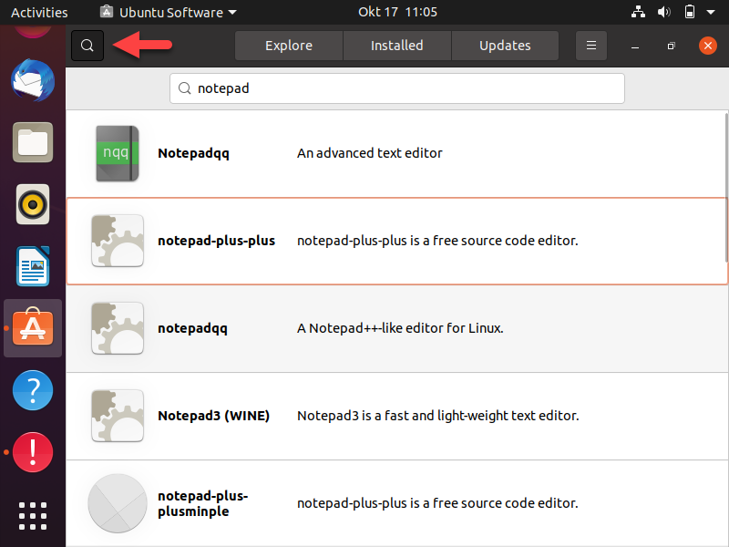
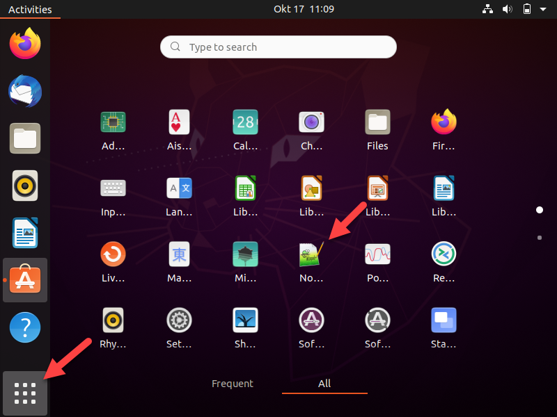
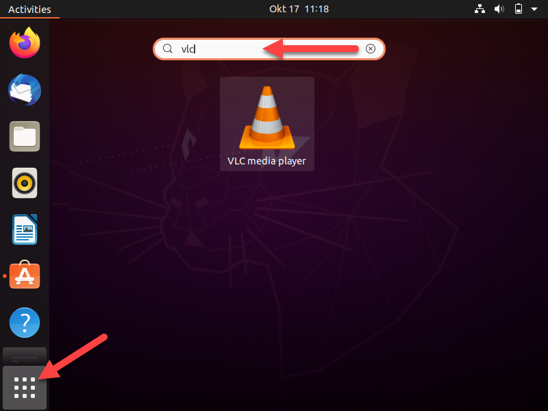

De drie wegen op deze pagina halen hun software uit een repository, dus wat je hier installeert blijft bijgewerkt zonder dat je er nog naar omkijkt. Je doet ze alle drie: één keer met vensters en twee keer in de terminal.
Open Ubuntu Software vanuit de balk links, en klik op het vergrootglas linksboven.
Typ de naam van een programma. Zoek je geen inspiratie, typ dan notepad en kies
notepad-plus-plus.

Klik het pakket aan en klik op Install. Je geeft je wachtwoord en de rest gebeurt vanzelf.
Kijk na of het geïnstalleerd is: klik linksonder op de negen puntjes en zoek het programma tussen je toepassingen.

Dezelfde repository, maar dan in de terminal. Je installeert ssh, en je let onderweg op wat
er nog meebinnenkomt.
Open een terminal en haal eerst de lijst op van wat er te krijgen is.
Installeer daarna het pakket.
Reading package lists... Done
Building dependency tree
Reading state information... Done
The following additional packages will be installed:
ncurses-term openssh-server openssh-sftp-server ssh-import-id
Suggested packages:
molly-guard monkeysphere rssh ssh-askpass
The following NEW packages will be installed:
ncurses-term openssh-server openssh-sftp-server ssh ssh-import-id
0 upgraded, 5 newly installed, 0 to remove and 8 not upgraded.
Need to get 642 kB of archives.
After this operation, 5.422 kB of additional disk space will be used.
Do you want to continue? [Y/n]
De vier namen in de gemarkeerde regel zijn de dependencies: je vroeg één pakket en er komen er
vijf. Druk op ENTER om door te gaan, want de Y staat in hoofdletters en
is dus het standaardantwoord.
VLC staat ook in de gewone repository, maar de makers raden hun snap aan omdat je daarmee sneller een
nieuwe versie krijgt. Het commando lijkt op dat van apt.
Installeer VLC met snap. Dit duurt langer dan de vorige, want een snap brengt alles
zelf mee.
vlc 3.0.20 from VideoLAN✓ installed
Zoek VLC op tussen je toepassingen en start het.

Het Software Center, apt en snap halen hun pakketten uit een repository, en
dat is waarom je er niets meer voor moet doen om ze bijgewerkt te houden. Vanaf de volgende pagina
verlaat je dat pad, en dan wordt dat wel jouw werk.